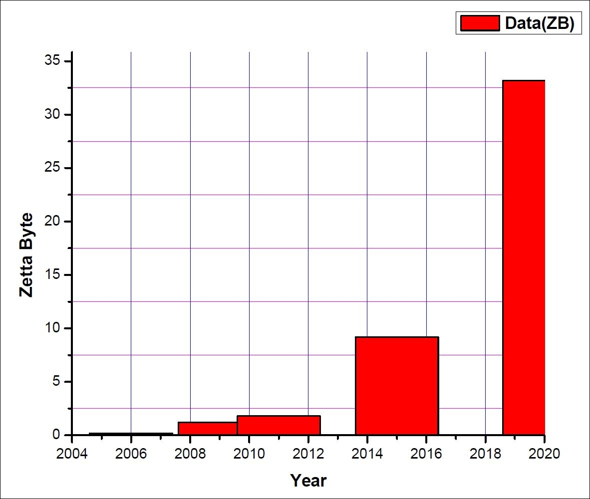
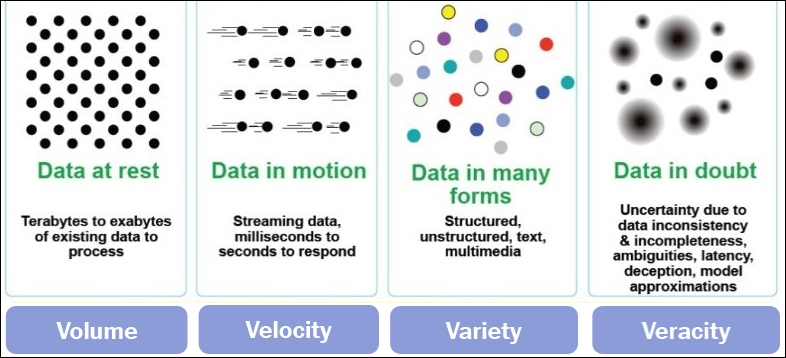
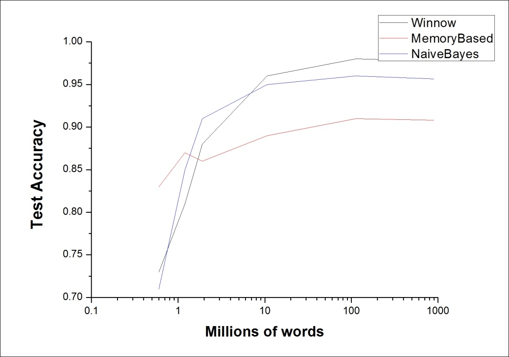

"In God we trust, all others must bring data" | ||
| --W. Edwards Deming | ||
In this exponentially growing digital world, big data and deep learning are the two hottest technical trends. Deep learning and big data are two interrelated topics in the world of data science, and in terms of technological growth, both are critically interconnected and equally significant.
Digital data and cloud storage follow a generic law, termed as Moore's law [50], which roughly states that the world's data are doubling every two years; however, the cost of storing that data decreases at approximately the same rate. This profusion of data generates more features and verities, hence, to extract all the valuable information out of it, better deep learning models should be built.
This voluminous availability of data helps to bring huge opportunities for multiple sectors. Moreover, big data, with its analytic part, has produced lots of challenges in the field of data mining, harnessing the data, and retrieving the hidden information out of it. In the field of Artificial Intelligence, deep learning algorithms provide their best output with large-scale data during the learning process. Therefore, as data are growing faster than ever before, deep learning also plays a crucial part in delivering all the big data analytic solutions.
This chapter will give an insight into how deep learning models behave with big data, and reveal the associated challenges. The later part of the chapter will introduce Deeplearning4j, an open source distributed framework, with a provision for integration with Hadoop and Spark, used to deploy deep learning for large-scale data. The chapter will provide examples to show how basic deep neural networks can be implemented with Deeplearning4j, and its integration to Apache Spark and Hadoop YARN.
The following are the important topics that will be covered in this chapter:
In this Exa-Byte scale era, the data are increasing at an exponential rate. This growth of data are analyzed by many organizations and researchers in various ways, and also for so many different purposes. According to the survey of International Data Corporation (IDC), the Internet is processing approximately 2 Petabytes of data every day [51]. In 2006, the size of digital data was around 0.18 ZB, whereas this volume has increased to 1.8 ZB in 2011. Up to 2015, it was expected to reach up to 10 ZB in size, and by 2020, its volume in the world will reach up to approximately 30 ZB to 35 ZB. The timeline of this data mountain is shown in Figure 2.1. These immense amounts of data in the digital world are formally termed as big data.
"The world of Big Data is on fire" | ||
| --The Economist, Sept 2011 | ||

Figure 2.1: Figure shows the increasing trend of data for a time span of around 20 years
Facebook has almost 21 PB in 200M objects [52], whereas Jaguar ORNL has more than 5 PB data. These stored data are growing so rapidly that Exa-Byte scale storage systems are likely to be used by 2018 to 2020.
This explosion of data certainly poses an immediate threat to the traditional data-intensive computations, and points towards the need for some distributed and scalable storage architecture for querying and analysis of the large-scale data. A generic line of thought for big data is that raw data is extremely complex, sundry, and increasingly growing. An ideal Big dataset consists of a vast amount of unsupervised raw data, and with some negligible amount of structured/categorized data. Therefore, while processing these amounts of non-stationary structured data, the conventional data-intensive computations often fail. As a result, big data, having unrestricted diversity, requires sophisticated methods and tools, which could be implemented to extract patterns and analyze the large-scale data. The growth of big data has mostly been caused by an increasing computational processing power and the capability of the modern systems to store data at lower cost.
Considering all these features of big data, it can be broken into four distinct dimensions, often referred to as the four Vs: Volume, Variety, Velocity, and Veracity. Following figure 2.2 shows the different characteristics of big data by providing all the 4Vs of data:

Figure 2.2: Figure depicts the visual representation of 4Vs of big data
In this current data-intensive technology era, the velocity of the data, the escalating rate at which the data are collected and obtained is as significant as the other parameters of the big data, that is, Volume and Variety. With the given pace, at which this data is getting generated, if it is not collected and analyzed sensibly, there is a huge risk of important data loss. Although, there is an option to retain this rapid-moving data into bulk storage for batch processing at a later period, the genuine importance in tackling this high velocity data lies in how quickly an organization can convert the raw data to a structured and usable format. Specifically, time-sensitive information such as flight fare, hotel fare, or some e-commerce product's price, and so on would become obsolete if the data is not immediately retained and processed in a systemic manner. The parameter veracity in big data is concerned with the accuracy of the results obtained after the data analysis. As data turns more complex each day, sustaining trust in the hidden information of big data throws a significant challenge.
To extract and analyze such critically complex data, a better, well-planned model is desired. In ideal cases, a model should perform better dealing with big data compared to data with small sizes. However, this is not always the case. Here, we will show one example to discuss more on this point.
As illustrated in Figure 2.3, with a small size dataset, the performance of the best algorithm is n% better than the worst one. However, as the size of the dataset increases (big data), the performance also enhances exponentially to some k % >> n %. Such kind of traces can well be found from [53], which clearly shows the effect of a large-scale training dataset in the performance of the model. However, it would be completely misleading that with any of the simplest models, one can achieve the best performance only using Big dataset.
From [53] we can see that algorithm 1 is basically a Naive Bayes model, algorithm 2 belongs to a memory-based model, and algorithm 3 corresponds to Winnow. The following graph shows, with a small dataset, that the performance of Winnow is less that the memory-based one. Whereas when dealing with Big dataset, both the Naive Bayes and Winnow show better performance than the memory-based model. So, looking at the Figure 2.3, it would be really difficult to infer on what basis any one of these simple models work better in an environment of large dataset. An intuitive explanation for the relatively poor performance of the memory-based method with large datasets is that the algorithm suffered due to the latency of loading a huge amount of data to its memory. Hence, it is purely a memory related issue, and only using big data would not resolve that. Therefore, a primary reason for the performance should be how sophisticated the models are. Hence, the importance of deep learning model comes into play.
Deep learning stands in contrast to big data. Deep learning has triumphantly been implemented in various industry products and widely practiced by various researchers by taking advantage of this large-scale digital data. Famous technological companies such as Facebook, Apple, and Google collect and analyze this voluminous amount of data on a daily basis, and have been bellicosely going forward with various deep learning related projects over the last few years.
Google deploys deep learning algorithms on the massive unstructured data collected from various sources including Google's Street view, image search engine, Google's translator, and Android's voice recognition.

Figure 2.3: Variation of percentage of accuracy of different types of algorithms with increasing size of datasets
Apple's Siri, a virtual personal assistant for iPhones, provides a bulk of different services, such as sport news, weather reports, answers to users' questions, and so on. The entire application of Siri is based on deep learning, which collects data from different Apple services and obtains its intelligence. Other industries, mainly Microsoft and IBM, are also using deep learning as their major domain to deal with this massive amount of unstructured data. IBM's brain-like computer, Watson, and Microsoft's Bing search engine primarily use deep learning techniques to leverage the big data.
Current deep learning architectures comprise of millions or even billions of data points. Moreover, the scale at which the data is growing prevents the model from the risk of overfitting. The rapid increase in computation power too has made the training of advanced models much easier.
Table 2.1 shows how big data is practiced with popular deep learning models in recent research to get maximum information out of data:
|
Models |
Computing power |
Datasets |
Average running time |
|
Convolutional Neural Network[55] |
Two NVIDIA GTX 580 3 GB GPUs. |
Roughly 90 cycles through the training set of 1.2 million high resolution images. |
Five to six days. |
|
Deep Belief Network [41] |
NVIDIA GTX 280 1 GB GPU. |
1 million images. |
Approximately one day. |
|
Sparse autoencoder[ 66] |
1000 CPU having 16000 cores each. |
10 million 200*200 pixel images. |
Approximately three days. |
Table 2.1: Recent research progress of large-scale deep learning models. Partial information taken from [55]
Deep learning algorithms, with the help of a hierarchical learning approach, are basically used to extract meaningful generic representations from the input raw data. Basically, at a higher level, more complex and abstract representations of the data are learnt from the previous layers and the less abstracted data of the multi-level learning model. Although deep learning can also learn from massive amounts of labelled (categorized) data, the models generally look attractive when they can learn from unlabeled/uncategorized data [56], and hence, help in generating some meaningful patterns and representation of the big unstructured data.
While dealing with large-scale unsupervised data, deep learning algorithms can extract the generic patterns and relationships among the data points in a much better way than the shallow learning architectures. The following are a few of the major characteristics of deep learning algorithms, when trained with large-scale unlabeled data:
Therefore, it can be surely concluded that deep learning will become an essential ingredient for providing big data sentiment analysis, predictive analysis, and so on, particularly with the enhanced processing power and advancement in the graphics processing unit (GPU) capacity. The aim of this chapter is not to extensively cover big data, but to represent the relationship between big data and deep learning. The subsequent sections will introduce the key concepts, applications, and challenges of deep learning while working with large-scale uncategorized data.